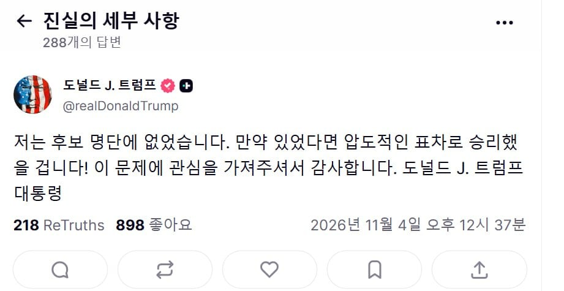

트럼프 SNS 업로드
난 이번 선거에 나오지도 않았다.
내가 나왔으면, 우리는 압도적으로 이겼을 거다!
정신승리ㅋㅋㅋㅋㅋㅋ

트럼프 SNS 업로드
난 이번 선거에 나오지도 않았다.
내가 나왔으면, 우리는 압도적으로 이겼을 거다!
정신승리ㅋㅋㅋㅋㅋㅋ
중국+러시아+민주당의 삼중 스파이 ㄷㄷㄷ
이 문제에 관심가져주셔거 감사합니다...ㅋㅋㅋㅋㅋㅋ


진짜 얘하는말보면 병신이란 말밖에 안나와 ㅋㅋㅋㅋ
니가 왜나와 병신새끼야
백악관 트위터도 정신승리 짤로 도배를 해놨더라
치매노인아니냐
하원에 출마하지 그랬냐

나오는 방법이 있을텐데?
사실 민주당의 다크나이트 아니었을까?
악역은 익듁하니까…